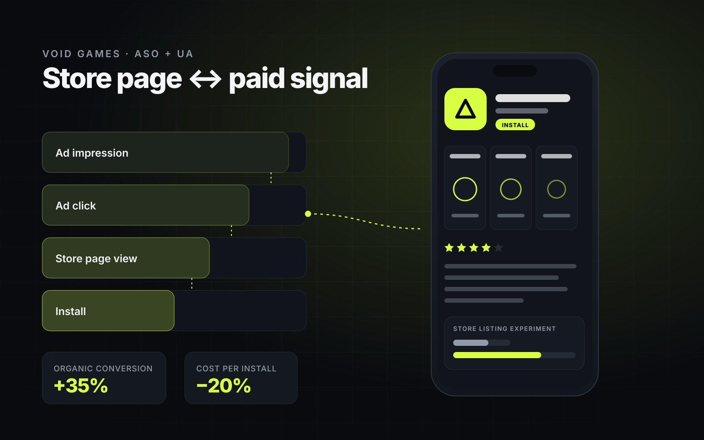

01

Void Games · ASO + UA
Turned store conversion into a growth multiplier.
Redesigned the ASO creative strategy and linked paid campaign signals with store performance to stop budget leakage.
+35%
Organic conversion
−20%
Cost per install